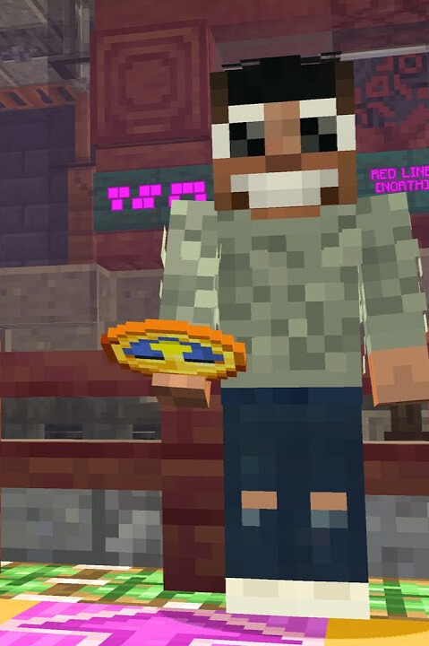
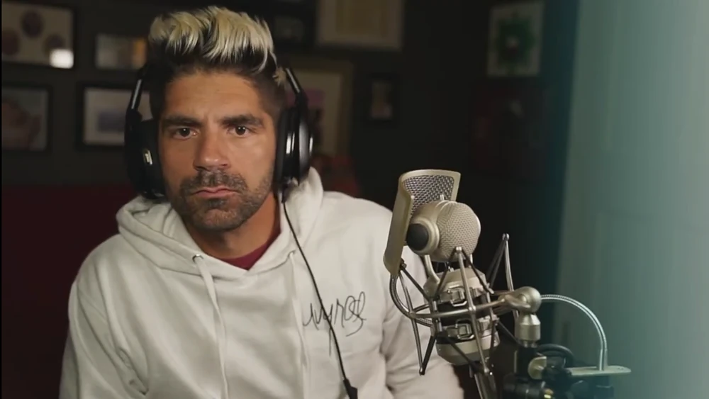

V herním světě Minecraftu vystupuje BdoubleO100 se svým nezaměnitelným skinem v usměvavém bílém triku, který se stal symbolem pro detailní a organické stavění. Jeho persona je neodmyslitelně spjata s posedlostí detaily – Bdubs je schopen strávit hodiny laděním jediného okna nebo výběrem správného odstínu mechu, aby jeho stavba vypadala „přirozeně staře“. Fanoušci ho také zbožňují pro jeho legendární nenávist k noci; jeho hláška „Sleep is for the weak" (Spánek je pro slabochy) ironicky kontrastuje s tím, jak agresivně v každém videu nahání postel, aby okamžitě přeskočil noc a mohl pracovat za denního světla. Tato herní postava není jen o dovednostech, ale i o emocích – Bdubs do svých sérií vnáší vášeň, kterou u jiných youtuberů málokdy uvidíte, ať už jde o radost z povedené střechy nebo komické zoufalství, když mu nějaký projekt nejde podle představ. Právě díky tomuto lidskému přístupu a schopnosti vdechnout život každé hromadě kostek se stal miláčkem komunity serveru Hermitcraft.
Více zde
BdoubleO100, vlastním jménem John Booko, je populární americký YouTube tvůrce a dlouholetý hráč Minecraftu, který se proslavil především jako klíčový člen legendárních serverů Mindcrack a Hermitcraft. Jeho tvorba je unikátní kombinací neuvěřitelného stavitelského talentu, specifického smyslu pro humor a vysoké kvality produkce, která inspiruje miliony hráčů po celém světě. John začal svou kariéru na YouTube již před mnoha lety a postupem času se stal jedním z nejuznávanějších stavitelů v komunitě. Jeho styl, často označovaný jako „texturované stavění“, využívá neobvyklé kombinace bloků k vytvoření hloubky a realismu, což z každého jeho projektu dělá umělecké dílo. Kromě samotného hraní je Bdubs známý svou energickou osobností a schopností vyprávět příběhy skrze své herní série, čímž si vybudoval neuvěřitelně loajální fanouškovskou základnu. Ať už zrovna pracuje na svém ikonickém městečku v divočině, experimentuje s barvami nebo spolupracuje s ostatními členy Hermitcraftu, jeho videa přinášejí do světa gamingu pozitivní energii a nekonečnou kreativitu, která neustále posouvá hranice toho, co je v kostičkovém světě Minecraftu možné postavit.
